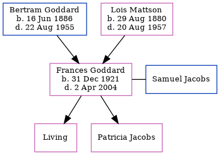

Lois Alta Goddard (née Mattson) 1880 - 1957
[ Home ] | [ Calendar ] | [ Surnames Index ] | [ Census Index ] | [ Family History ]Lois Mattson, the wife of Bertram Charles Goddard (the second cousin twice-removed on the father's side of Nigel Horne), was born in Ellsworth, Emmet, Iowa, USA on Aug 29, 18801,2 and married Bertram (a telegraph messenger with whom she had 3 children: Frederick Guy Charles, Mary Idabelle and Frances Ellen) in Cedaredge, Delta, Colorado, USA on Apr 11, 19143.
During her life, she was living in Montrose, Colorado, USA on Jan 1, 19201; and in Olathe, Colorado on Apr 1, 19304 which is where she died on Aug 20, 19572. She was buried there at Olathe Cemetery after Aug 20, 1957.
Children
- Frederick Guy Charles was born on Feb 25, 1915
- Mary Idabelle was born on Apr 2, 1917
- Frances Ellen was born on Dec 31, 1921
Citations
- US Census 1920 - Findmypast (was age 33 and the wife of the head of the household)
- United States Billion Graves index - Findmypast
- United States Marriages - Findmypast
- US Census 1930 - Findmypast (was age 48 and the wife of the head of the household)
Media
Bertram Goddard - Lois Mattson - Marriage Report

United States Marriages - US/FS/M/000532499/2
United States Billion Graves index - US/BMD/BILLION/007353234
Family Tree
Generated by ged2site. Last updated on Jun 11, 2024